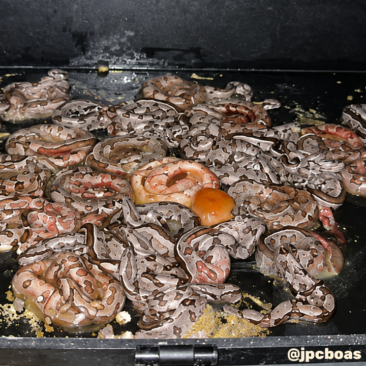
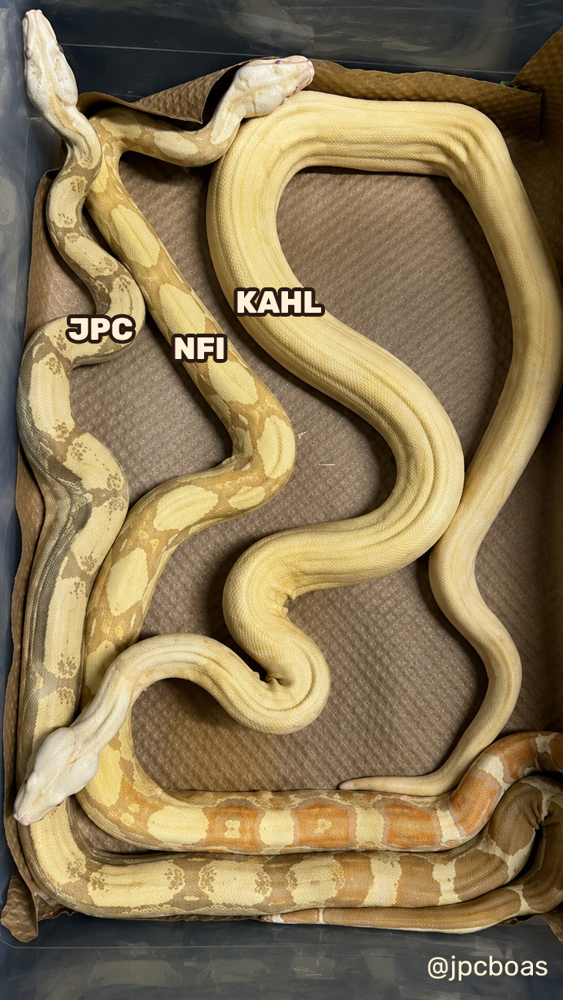

¿Un nuevo albinismo? Los tests genéticos cambian el panorama
Durante casi dos décadas, los criadores de Boa constrictor se han enfrentado a un rompecabezas genético que no encajaba en ninguna de las reglas conocidas. Lo que comenzó en 2008 como una cría inesperada en el criadero de Joe (JPC Boas) se ha convertido oficialmente en uno de los descubrimientos más fascinantes de la herpetocultura moderna, revelado recientemente en el episodio 150 del programa Reptile Genetics Weekly de la mano del Dr. Ben Morrill (Rare Genetics Inc.), junto a los experimentados criadores Joe, Nate y Jeff (The Boaphile).
El nacimiento del misterio: Un "NFI" en la camada
Todo empezó en 2008 cuando Joe cruzó a "Romeo" y "Juliet", dos boas de patrón normal seleccionadas simplemente por sus atractivas franjas e intensidad de color naranja. Ninguno de los padres era supuestamente portador (Het) de albinismo. Sin embargo, de una camada de 37 crías nació una sola cría albina con un aspecto inusual. Al repetir el cruce al año siguiente, nacieron 32 crías y ni un solo albino.
Al no comprender qué estaba sucediendo, el ejemplar fue bautizado de forma informal como NFI (No Freaking Idea). Durante años, muchos en la afición asumieron que el NFI era simplemente una variación más intensa del albino línea Kahl o un gen dominante incompleto. Sin embargo, sus resultados de cría no seguían las proporciones estadísticas habituales.


Camada de 2008 en JPC Boas, donde nació el primer ejemplar NFI. Foto cortesía de Joe (JPC Boas).
La ciencia al rescate: El análisis de ADN
El punto de inflexión llegó cuando Nate, un estudiante de biología que comenzaba a trabajar con Joe, decidió no quedarse con la duda e impulsó la recolección sistemática de mudas de piel para enviarlas al laboratorio de Rare Genetics Inc. (RGI).
Gracias a las pruebas de ADN desarrolladas por el Dr. Ben Morrill y su equipo, la genética detrás de esta línea finalmente ha sido descifrada:
- Es una mutación alélica compatible: El gen NFI no es un modificador ni un gen independiente, sino una nueva mutación que ocupa exactamente el mismo locus genético que el Albino Kahl.
- Funciona como un complejo alélico: Funciona de manera análoga al complejo Paradigm/Paradise en boas o al Candino en las pitones bola.
La nueva terminología: ¿Cómo se clasifican ahora?
Para reflejar la realidad genética descubierta por el laboratorio, la comunidad de criadores ha establecido una nomenclatura clara para este complejo:
- Albino Kahl (Homocigoto Kahl): Posee dos copias del gen Kahl Albino tradicional. Es la forma albina más clara y amarilla.
- JPC Albino (Homocigoto para la nueva mutación): La forma homocigota pura de esta nueva mutación (anteriormente llamada "Super NFI"). Visualmente presenta un fenotipo más oscuro, con tonos marrones y un aspecto similar a las líneas T-positivas.
- NFI Albino (Heterocigoto compuesto): Ocurre cuando la boa hereda una copia del gen Kahl y una copia del gen JPC. Esta combinación da lugar al fenotipo visual de tonos púrpuras y grises que dio origen a todo el proyecto.

Un hito para la crianza de reptiles
Este hallazgo no solo demuestra el valor de la colaboración entre veterinarios, genetistas y la "nueva sangre" de estudiantes y criadores, sino que también abre un abanico enorme de combinaciones. Proyectos combinados con genes como Leopard, IMG o Motley ahora pueden trabajarse con la certeza de estar utilizando un alelo completamente independiente y compatible.
Además, demuestra cómo las pruebas genéticas a través de simples mudas de piel están transformando lo que antes eran proyectos "dinker" o inciertos en líneas genéticas sólidas y validadas científicamente.
La genética sigue reescribiendo el futuro de la herpetocultura.